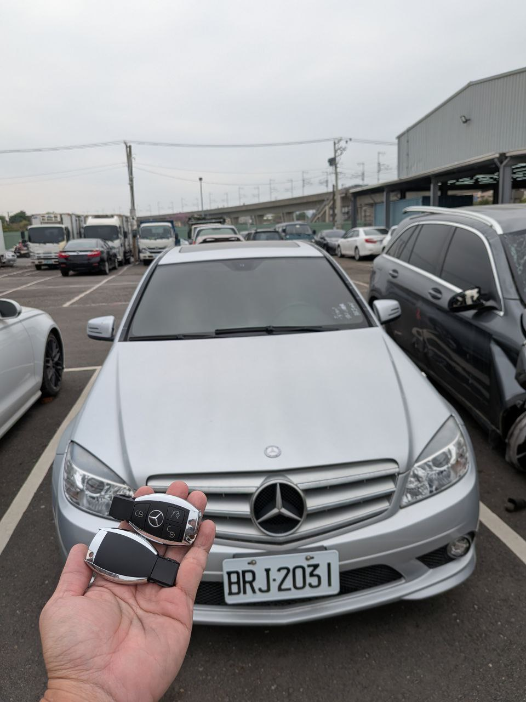

現場實拍：高雄楠梓地區 Benz W204 鑰匙全丟，現場 FBS3 系統匹配完成
經典賓士的防盜挑戰：W204 FBS3 系統現場解碼
在高雄楠梓的一處停車場，一輛 2013 年式的 Mercedes-Benz W204 (C-Class) 因鑰匙全丟而陷入癱瘓。W204 所搭載的 FBS3 防盜系統雖然經典，但當鑰匙全丟時，需要透過專業設備讀取 EIS (電子點火開關) 的底層密碼數據，才能重新授權新鑰匙。
技術核心：免拖吊現場密鑰計算
極致核心職人獲報後迅速南下支援。現場利用高階診斷器材接管 EIS 數據，進行雲端密鑰計算。在不影響車輛原有電子線路的狀況下，成功寫入兩把全新副廠式樣（高品質感應晶片）智慧鑰匙，同步恢復紅外線感應與啟動功能。
數據精準度
100% 讀取 EIS 底層數據，確保匹配鑰匙穩定耐用。
高效遠征
高雄地區 24H 快速響應，現場約 1 小時完工交車。